-
To Test All Datas in Document Details In Offering Stage
17:57:53 PM / 30:34:817 Pass
To Test All Datas in Document Details In Offering Stage
09.26.2023 17:57:53 09.26.2023 17:58:28 30:34:817 · #test-id=1PassTo verify Asset Details at App data entry stage is visible at data check stageGiven navigate the IJARA URLstepdefinitions.HooksClass.addScreenshot(io.cucumber.java.Scenario)screenshotAnd login with valid credentialsstepdefinitions.HooksClass.addScreenshot(io.cucumber.java.Scenario)screenshot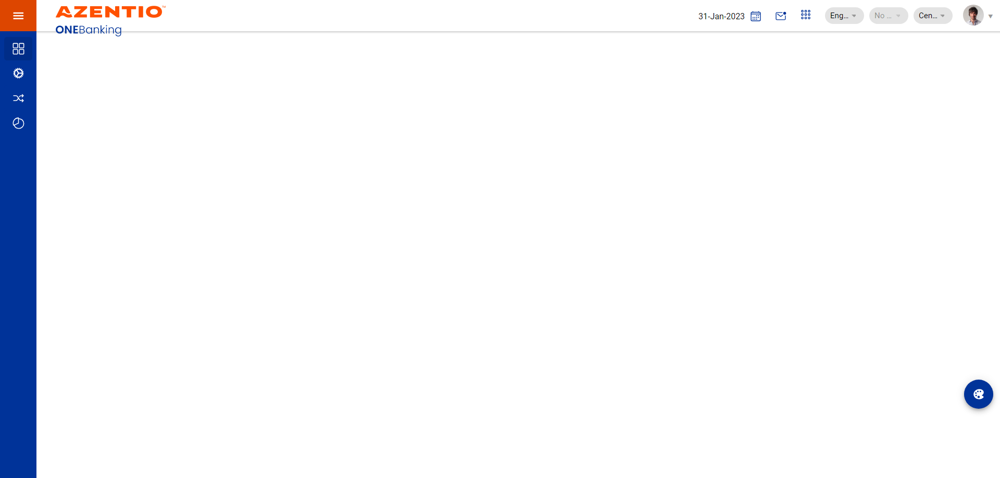And get the test data for test case ID AT_DOC_01stepdefinitions.HooksClass.addScreenshot(io.cucumber.java.Scenario)screenshot And click on mail boxstepdefinitions.HooksClass.addScreenshot(io.cucumber.java.Scenario)screenshot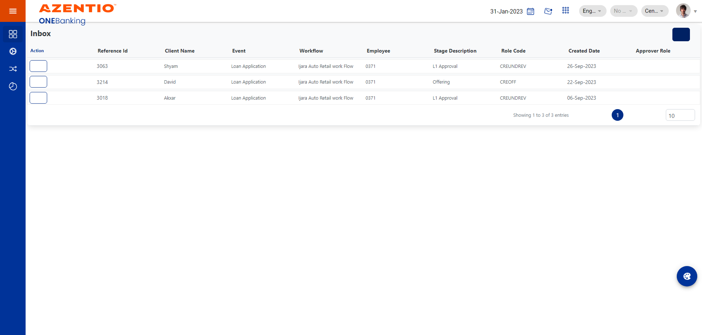And click on search box upon click on the mail boxstepdefinitions.HooksClass.addScreenshot(io.cucumber.java.Scenario)screenshot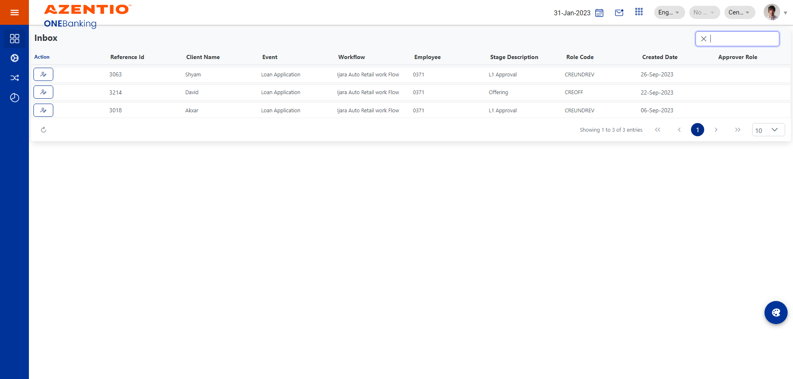And search the record reference number in search text boxstepdefinitions.HooksClass.addScreenshot(io.cucumber.java.Scenario)screenshot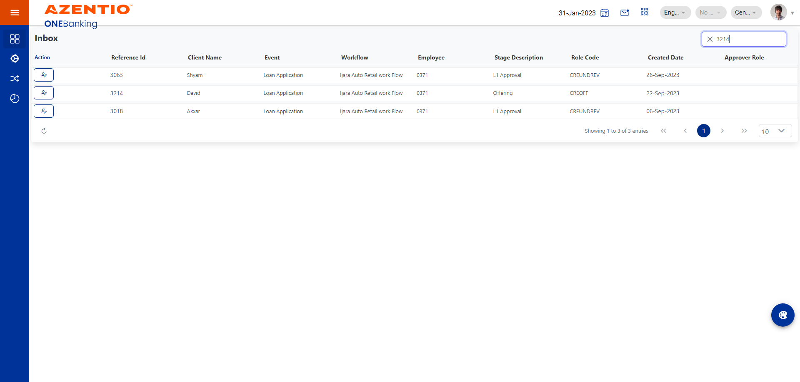And Select record after searchstepdefinitions.HooksClass.addScreenshot(io.cucumber.java.Scenario)screenshot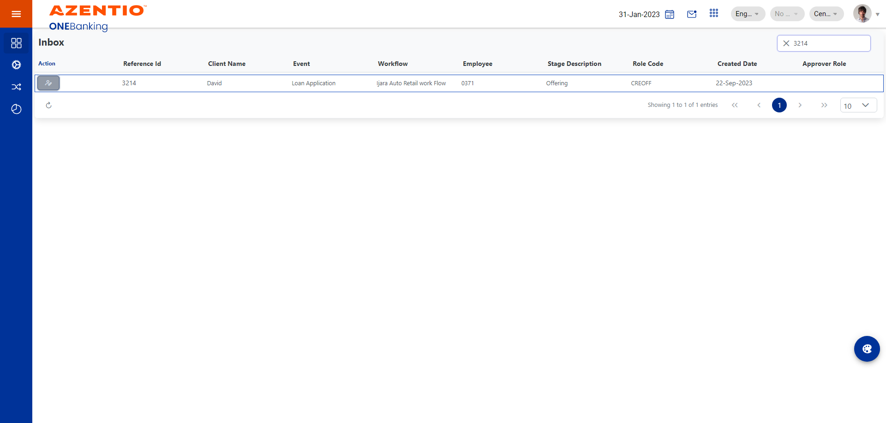And User_626 click on Next and Document Details tabstepdefinitions.HooksClass.addScreenshot(io.cucumber.java.Scenario)screenshot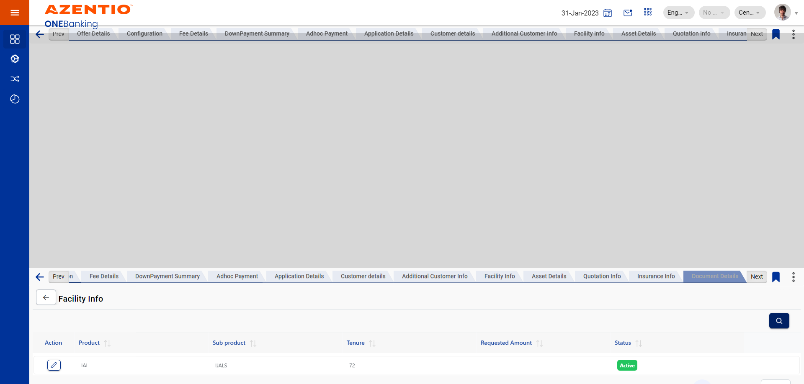And User_626 click on the Action View button Below the Document Detailsstepdefinitions.HooksClass.addScreenshot(io.cucumber.java.Scenario)screenshot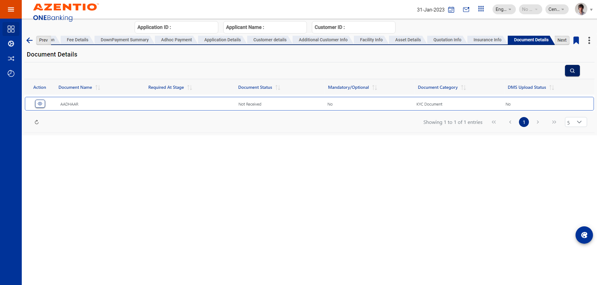And User_626 verify Customer Name field should visible in Document details screenstepdefinitions.HooksClass.addScreenshot(io.cucumber.java.Scenario)screenshot
And click on mail boxstepdefinitions.HooksClass.addScreenshot(io.cucumber.java.Scenario)screenshot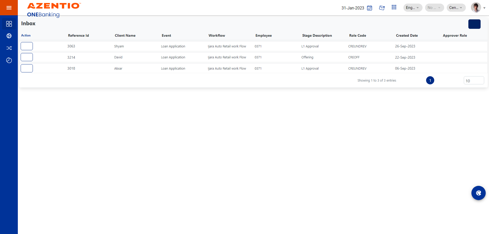And click on search box upon click on the mail boxstepdefinitions.HooksClass.addScreenshot(io.cucumber.java.Scenario)screenshot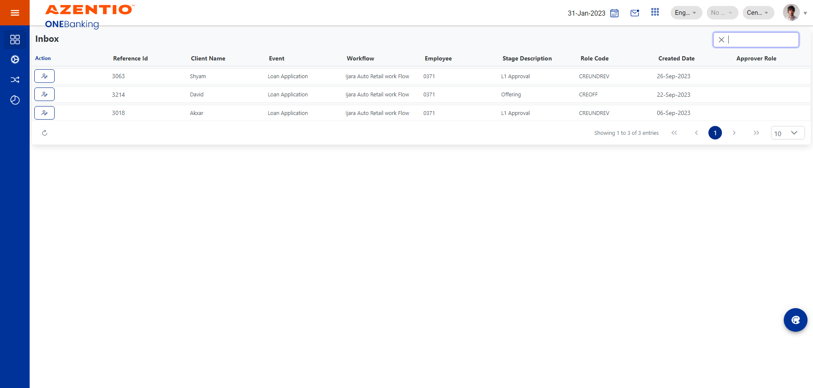And search the record reference number in search text boxstepdefinitions.HooksClass.addScreenshot(io.cucumber.java.Scenario)screenshot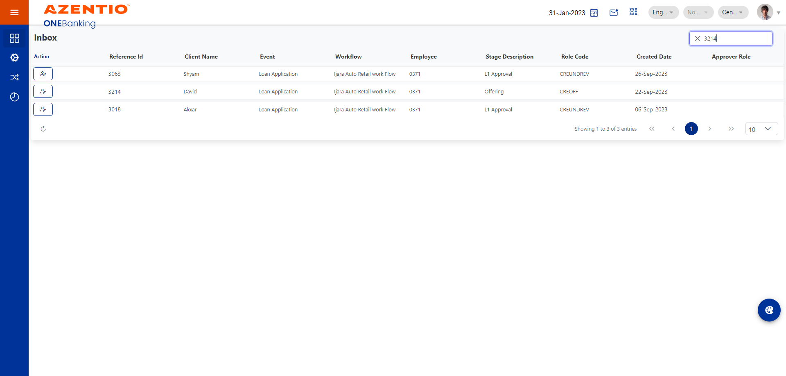And Select record after searchstepdefinitions.HooksClass.addScreenshot(io.cucumber.java.Scenario)screenshot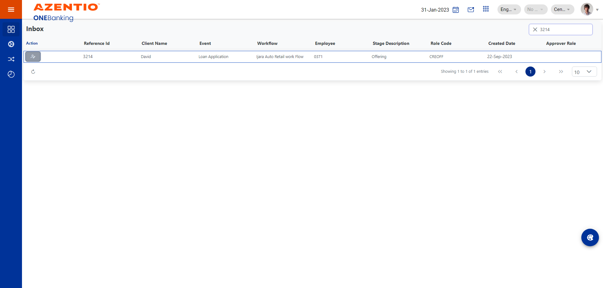And User_626 click on Next and Document Details tabstepdefinitions.HooksClass.addScreenshot(io.cucumber.java.Scenario)screenshot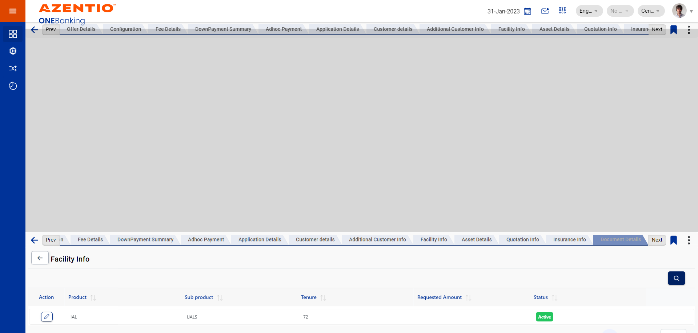And User_626 click on the Action View button Below the Document Detailsstepdefinitions.HooksClass.addScreenshot(io.cucumber.java.Scenario)screenshot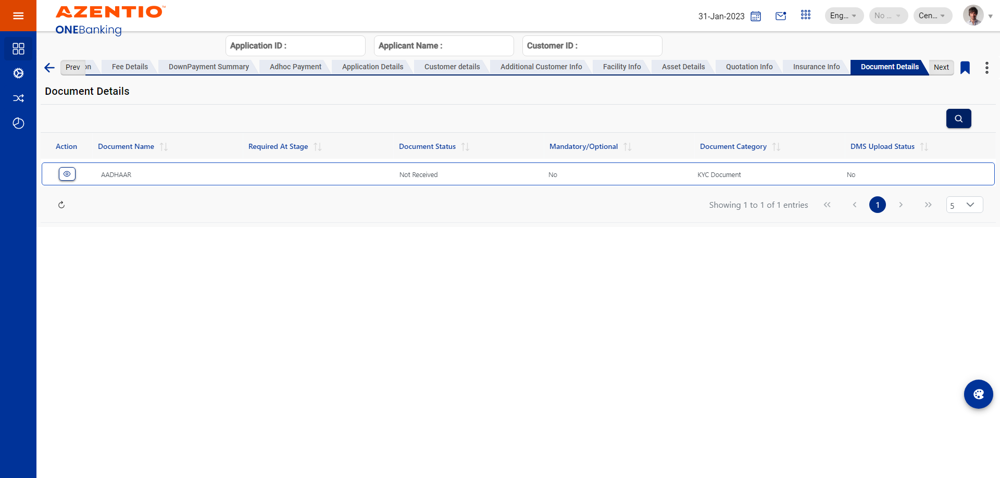And User_626 verify Customer Name field should visible in Document details screenstepdefinitions.HooksClass.addScreenshot(io.cucumber.java.Scenario)screenshot And User_626 verify Document Namefield should visible in Document details screenstepdefinitions.HooksClass.addScreenshot(io.cucumber.java.Scenario)screenshot
And User_626 verify Document Namefield should visible in Document details screenstepdefinitions.HooksClass.addScreenshot(io.cucumber.java.Scenario)screenshot And User_626 verify Required At Stage field should visible in Document details screenstepdefinitions.HooksClass.addScreenshot(io.cucumber.java.Scenario)screenshot
And User_626 verify Required At Stage field should visible in Document details screenstepdefinitions.HooksClass.addScreenshot(io.cucumber.java.Scenario)screenshot And User_626 verify Document Status field should visible in Document details screenstepdefinitions.HooksClass.addScreenshot(io.cucumber.java.Scenario)screenshot
And User_626 verify Document Status field should visible in Document details screenstepdefinitions.HooksClass.addScreenshot(io.cucumber.java.Scenario)screenshot And User_626 verify ManDatory field should visible in Document details screenstepdefinitions.HooksClass.addScreenshot(io.cucumber.java.Scenario)screenshot
And User_626 verify ManDatory field should visible in Document details screenstepdefinitions.HooksClass.addScreenshot(io.cucumber.java.Scenario)screenshot And User_626 verify Document Category field should visible in Document details screenstepdefinitions.HooksClass.addScreenshot(io.cucumber.java.Scenario)screenshot
And User_626 verify Document Category field should visible in Document details screenstepdefinitions.HooksClass.addScreenshot(io.cucumber.java.Scenario)screenshot And User_626 verify Upload Date field should visible in Document details screenstepdefinitions.HooksClass.addScreenshot(io.cucumber.java.Scenario)screenshot
And User_626 verify Upload Date field should visible in Document details screenstepdefinitions.HooksClass.addScreenshot(io.cucumber.java.Scenario)screenshot And User_626 verify Expected Receipt Date field should visible in Document details screenstepdefinitions.HooksClass.addScreenshot(io.cucumber.java.Scenario)screenshot
And User_626 verify Expected Receipt Date field should visible in Document details screenstepdefinitions.HooksClass.addScreenshot(io.cucumber.java.Scenario)screenshot And User_626 verify Deferral Stage field should visible in Document details screenstepdefinitions.HooksClass.addScreenshot(io.cucumber.java.Scenario)screenshot
And User_626 verify Deferral Stage field should visible in Document details screenstepdefinitions.HooksClass.addScreenshot(io.cucumber.java.Scenario)screenshot And User_626 verify Def Approval byfield should visible in Document details screenstepdefinitions.HooksClass.addScreenshot(io.cucumber.java.Scenario)screenshot
And User_626 verify Def Approval byfield should visible in Document details screenstepdefinitions.HooksClass.addScreenshot(io.cucumber.java.Scenario)screenshot And User_626 verify Change In Nature field should visible in Document details screenstepdefinitions.HooksClass.addScreenshot(io.cucumber.java.Scenario)screenshot
And User_626 verify Change In Nature field should visible in Document details screenstepdefinitions.HooksClass.addScreenshot(io.cucumber.java.Scenario)screenshot And User_626 verify Document Form field should visible in Document details screenstepdefinitions.HooksClass.addScreenshot(io.cucumber.java.Scenario)screenshot
And User_626 verify Document Form field should visible in Document details screenstepdefinitions.HooksClass.addScreenshot(io.cucumber.java.Scenario)screenshot And User_626 verify Document Quality field should visible in Document details screenstepdefinitions.HooksClass.addScreenshot(io.cucumber.java.Scenario)screenshot
And User_626 verify Document Quality field should visible in Document details screenstepdefinitions.HooksClass.addScreenshot(io.cucumber.java.Scenario)screenshot And User_626 verify Document ref No field should visible in Document details screenstepdefinitions.HooksClass.addScreenshot(io.cucumber.java.Scenario)screenshot
And User_626 verify Document ref No field should visible in Document details screenstepdefinitions.HooksClass.addScreenshot(io.cucumber.java.Scenario)screenshot And User_626 verify Document Received By field should visible in Document details screenstepdefinitions.HooksClass.addScreenshot(io.cucumber.java.Scenario)screenshot
And User_626 verify Document Received By field should visible in Document details screenstepdefinitions.HooksClass.addScreenshot(io.cucumber.java.Scenario)screenshot And User_626 verify Location field should visible in Document details screenstepdefinitions.HooksClass.addScreenshot(io.cucumber.java.Scenario)screenshot
And User_626 verify Location field should visible in Document details screenstepdefinitions.HooksClass.addScreenshot(io.cucumber.java.Scenario)screenshot And User_626 verify Rack No field should visible in Document details screenstepdefinitions.HooksClass.addScreenshot(io.cucumber.java.Scenario)screenshot
And User_626 verify Rack No field should visible in Document details screenstepdefinitions.HooksClass.addScreenshot(io.cucumber.java.Scenario)screenshot And User_626 verify Shelf No field should visible in Document details screenstepdefinitions.HooksClass.addScreenshot(io.cucumber.java.Scenario)screenshot
And User_626 verify Shelf No field should visible in Document details screenstepdefinitions.HooksClass.addScreenshot(io.cucumber.java.Scenario)screenshot And User_626 verify Box No field should visible in Document details screenstepdefinitions.HooksClass.addScreenshot(io.cucumber.java.Scenario)screenshot
And User_626 verify Box No field should visible in Document details screenstepdefinitions.HooksClass.addScreenshot(io.cucumber.java.Scenario)screenshot And User_626 verify Date Of Expiry field should visible in Document details screenstepdefinitions.HooksClass.addScreenshot(io.cucumber.java.Scenario)screenshot
And User_626 verify Date Of Expiry field should visible in Document details screenstepdefinitions.HooksClass.addScreenshot(io.cucumber.java.Scenario)screenshot And User_626 verify Lodgement Amount field should visible in Document details screenstepdefinitions.HooksClass.addScreenshot(io.cucumber.java.Scenario)screenshot
And User_626 verify Lodgement Amount field should visible in Document details screenstepdefinitions.HooksClass.addScreenshot(io.cucumber.java.Scenario)screenshot And User_626 verify Remarks field should visible in Document details screenstepdefinitions.HooksClass.addScreenshot(io.cucumber.java.Scenario)screenshot
And User_626 verify Remarks field should visible in Document details screenstepdefinitions.HooksClass.addScreenshot(io.cucumber.java.Scenario)screenshot And User_626 verify View field should visible in Document details screenstepdefinitions.HooksClass.addScreenshot(io.cucumber.java.Scenario)screenshot
And User_626 verify View field should visible in Document details screenstepdefinitions.HooksClass.addScreenshot(io.cucumber.java.Scenario)screenshot And User_626 verify Generate Doc field should visible in Document details screenstepdefinitions.HooksClass.addScreenshot(io.cucumber.java.Scenario)screenshot
And User_626 verify Generate Doc field should visible in Document details screenstepdefinitions.HooksClass.addScreenshot(io.cucumber.java.Scenario)screenshot And User_626 verify Status field should visible in Document details screenstepdefinitions.HooksClass.addScreenshot(io.cucumber.java.Scenario)screenshot
And User_626 verify Status field should visible in Document details screenstepdefinitions.HooksClass.addScreenshot(io.cucumber.java.Scenario)screenshot And User_626 verify Help field should visible in Document details screenstepdefinitions.HooksClass.addScreenshot(io.cucumber.java.Scenario)screenshot
And User_626 verify Help field should visible in Document details screenstepdefinitions.HooksClass.addScreenshot(io.cucumber.java.Scenario)screenshot And User_626 verify Customer Name Data should visible As Entry stage screenstepdefinitions.HooksClass.addScreenshot(io.cucumber.java.Scenario)screenshot
And User_626 verify Customer Name Data should visible As Entry stage screenstepdefinitions.HooksClass.addScreenshot(io.cucumber.java.Scenario)screenshot And User_626 verify Document Name Data should visible As Entry stage screenstepdefinitions.HooksClass.addScreenshot(io.cucumber.java.Scenario)screenshot
And User_626 verify Document Name Data should visible As Entry stage screenstepdefinitions.HooksClass.addScreenshot(io.cucumber.java.Scenario)screenshot And User_626 verify Document status Data should visible As Entry stage screenstepdefinitions.HooksClass.addScreenshot(io.cucumber.java.Scenario)screenshot
And User_626 verify Document status Data should visible As Entry stage screenstepdefinitions.HooksClass.addScreenshot(io.cucumber.java.Scenario)screenshot And User_626 verify Mandatory optional Data should visible As Entry stage screenstepdefinitions.HooksClass.addScreenshot(io.cucumber.java.Scenario)screenshot
And User_626 verify Mandatory optional Data should visible As Entry stage screenstepdefinitions.HooksClass.addScreenshot(io.cucumber.java.Scenario)screenshot And User_626 verify Document Category Data should visible As Entry stage screenstepdefinitions.HooksClass.addScreenshot(io.cucumber.java.Scenario)screenshot
And User_626 verify Document Category Data should visible As Entry stage screenstepdefinitions.HooksClass.addScreenshot(io.cucumber.java.Scenario)screenshot And User_626 verify Deferred Stage Data should visible As Entry stage screenstepdefinitions.HooksClass.addScreenshot(io.cucumber.java.Scenario)screenshot
And User_626 verify Deferred Stage Data should visible As Entry stage screenstepdefinitions.HooksClass.addScreenshot(io.cucumber.java.Scenario)screenshot And User_626 verify quality Data should visible As Entry stage screenstepdefinitions.HooksClass.addScreenshot(io.cucumber.java.Scenario)screenshot
And User_626 verify quality Data should visible As Entry stage screenstepdefinitions.HooksClass.addScreenshot(io.cucumber.java.Scenario)screenshot And User_626 verify remarks Data should visible As Entry stage screenstepdefinitions.HooksClass.addScreenshot(io.cucumber.java.Scenario)screenshot
And User_626 verify remarks Data should visible As Entry stage screenstepdefinitions.HooksClass.addScreenshot(io.cucumber.java.Scenario)screenshot And User_626 verify Customer Name field should visible in DisPlay Onlystepdefinitions.HooksClass.addScreenshot(io.cucumber.java.Scenario)screenshot
And User_626 verify Customer Name field should visible in DisPlay Onlystepdefinitions.HooksClass.addScreenshot(io.cucumber.java.Scenario)screenshot And User_626 verify Document Namefield should visible in DisPlay Onlystepdefinitions.HooksClass.addScreenshot(io.cucumber.java.Scenario)screenshot
And User_626 verify Document Namefield should visible in DisPlay Onlystepdefinitions.HooksClass.addScreenshot(io.cucumber.java.Scenario)screenshot And User_626 verify Required At Stage field should visible in DisPlay Onlystepdefinitions.HooksClass.addScreenshot(io.cucumber.java.Scenario)screenshot
And User_626 verify Required At Stage field should visible in DisPlay Onlystepdefinitions.HooksClass.addScreenshot(io.cucumber.java.Scenario)screenshot And User_626 verify Document Status field should visible in DisPlay Onlystepdefinitions.HooksClass.addScreenshot(io.cucumber.java.Scenario)screenshot
And User_626 verify Document Status field should visible in DisPlay Onlystepdefinitions.HooksClass.addScreenshot(io.cucumber.java.Scenario)screenshot And User_626 verify ManDatory field should visible in DisPlay Onlystepdefinitions.HooksClass.addScreenshot(io.cucumber.java.Scenario)screenshot
And User_626 verify ManDatory field should visible in DisPlay Onlystepdefinitions.HooksClass.addScreenshot(io.cucumber.java.Scenario)screenshot And User_626 verify Document Category field should visible in DisPlay Onlystepdefinitions.HooksClass.addScreenshot(io.cucumber.java.Scenario)screenshot
And User_626 verify Document Category field should visible in DisPlay Onlystepdefinitions.HooksClass.addScreenshot(io.cucumber.java.Scenario)screenshot And User_626 verify Upload Date field should visible in DisPlay Onlystepdefinitions.HooksClass.addScreenshot(io.cucumber.java.Scenario)screenshot
And User_626 verify Upload Date field should visible in DisPlay Onlystepdefinitions.HooksClass.addScreenshot(io.cucumber.java.Scenario)screenshot And User_626 verify Expected Receipt Date field should visible in DisPlay Onlystepdefinitions.HooksClass.addScreenshot(io.cucumber.java.Scenario)screenshot
And User_626 verify Expected Receipt Date field should visible in DisPlay Onlystepdefinitions.HooksClass.addScreenshot(io.cucumber.java.Scenario)screenshot And User_626 verify Deferral Stage field should visible in DisPlay Onlystepdefinitions.HooksClass.addScreenshot(io.cucumber.java.Scenario)screenshot
And User_626 verify Deferral Stage field should visible in DisPlay Onlystepdefinitions.HooksClass.addScreenshot(io.cucumber.java.Scenario)screenshot And User_626 verify Def Approval byfield should visible in DisPlay Onlystepdefinitions.HooksClass.addScreenshot(io.cucumber.java.Scenario)screenshot
And User_626 verify Def Approval byfield should visible in DisPlay Onlystepdefinitions.HooksClass.addScreenshot(io.cucumber.java.Scenario)screenshot And User_626 verify Change In Nature field should visible in DisPlay Onlystepdefinitions.HooksClass.addScreenshot(io.cucumber.java.Scenario)screenshot
And User_626 verify Change In Nature field should visible in DisPlay Onlystepdefinitions.HooksClass.addScreenshot(io.cucumber.java.Scenario)screenshot And User_626 verify Document Form field should visible in DisPlay Onlystepdefinitions.HooksClass.addScreenshot(io.cucumber.java.Scenario)screenshot
And User_626 verify Document Form field should visible in DisPlay Onlystepdefinitions.HooksClass.addScreenshot(io.cucumber.java.Scenario)screenshot And User_626 verify Document Quality field should visible in DisPlay Onlystepdefinitions.HooksClass.addScreenshot(io.cucumber.java.Scenario)screenshot
And User_626 verify Document Quality field should visible in DisPlay Onlystepdefinitions.HooksClass.addScreenshot(io.cucumber.java.Scenario)screenshot And User_626 verify Document ref No field should visible in DisPlay Onlystepdefinitions.HooksClass.addScreenshot(io.cucumber.java.Scenario)screenshot
And User_626 verify Document ref No field should visible in DisPlay Onlystepdefinitions.HooksClass.addScreenshot(io.cucumber.java.Scenario)screenshot And User_626 verify Document Received By field should visible in DisPlay Onlystepdefinitions.HooksClass.addScreenshot(io.cucumber.java.Scenario)screenshot
And User_626 verify Document Received By field should visible in DisPlay Onlystepdefinitions.HooksClass.addScreenshot(io.cucumber.java.Scenario)screenshot And User_626 verify Location field should visible in DisPlay Onlystepdefinitions.HooksClass.addScreenshot(io.cucumber.java.Scenario)screenshot
And User_626 verify Location field should visible in DisPlay Onlystepdefinitions.HooksClass.addScreenshot(io.cucumber.java.Scenario)screenshot And User_626 verify Rack No field should visible in DisPlay Onlystepdefinitions.HooksClass.addScreenshot(io.cucumber.java.Scenario)screenshot
And User_626 verify Rack No field should visible in DisPlay Onlystepdefinitions.HooksClass.addScreenshot(io.cucumber.java.Scenario)screenshot And User_626 verify Shelf No field should visible in DisPlay Onlystepdefinitions.HooksClass.addScreenshot(io.cucumber.java.Scenario)screenshot
And User_626 verify Shelf No field should visible in DisPlay Onlystepdefinitions.HooksClass.addScreenshot(io.cucumber.java.Scenario)screenshot And User_626 verify Box No field should visible in DisPlay Onlystepdefinitions.HooksClass.addScreenshot(io.cucumber.java.Scenario)screenshot
And User_626 verify Box No field should visible in DisPlay Onlystepdefinitions.HooksClass.addScreenshot(io.cucumber.java.Scenario)screenshot And User_626 verify Date Of Expiry field should visible in DisPlay Onlystepdefinitions.HooksClass.addScreenshot(io.cucumber.java.Scenario)screenshot
And User_626 verify Date Of Expiry field should visible in DisPlay Onlystepdefinitions.HooksClass.addScreenshot(io.cucumber.java.Scenario)screenshot And User_626 verify Lodgement Amount field should visible in DisPlay Onlystepdefinitions.HooksClass.addScreenshot(io.cucumber.java.Scenario)screenshot
And User_626 verify Lodgement Amount field should visible in DisPlay Onlystepdefinitions.HooksClass.addScreenshot(io.cucumber.java.Scenario)screenshot And User_626 verify Remarks field should visible in DisPlay Onlystepdefinitions.HooksClass.addScreenshot(io.cucumber.java.Scenario)screenshot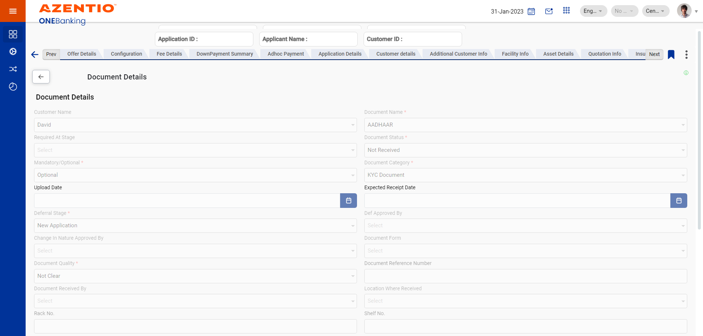And User_626 verify View field should visible in DisPlay Onlystepdefinitions.HooksClass.addScreenshot(io.cucumber.java.Scenario)screenshot
And User_626 verify Remarks field should visible in DisPlay Onlystepdefinitions.HooksClass.addScreenshot(io.cucumber.java.Scenario)screenshot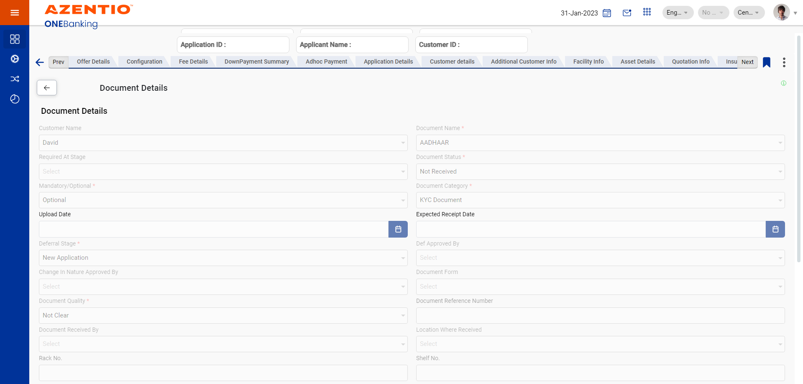And User_626 verify View field should visible in DisPlay Onlystepdefinitions.HooksClass.addScreenshot(io.cucumber.java.Scenario)screenshot And User_626 verify Generate Doc field should visible in DisPlay Onlystepdefinitions.HooksClass.addScreenshot(io.cucumber.java.Scenario)screenshot
And User_626 verify Generate Doc field should visible in DisPlay Onlystepdefinitions.HooksClass.addScreenshot(io.cucumber.java.Scenario)screenshot And User_626 verify Status field should visible in DisPlay Onlystepdefinitions.HooksClass.addScreenshot(io.cucumber.java.Scenario)screenshot
And User_626 verify Status field should visible in DisPlay Onlystepdefinitions.HooksClass.addScreenshot(io.cucumber.java.Scenario)screenshot Then User_626 clicking on back button system should navigate to the previous screenstepdefinitions.HooksClass.addScreenshot(io.cucumber.java.Scenario)screenshot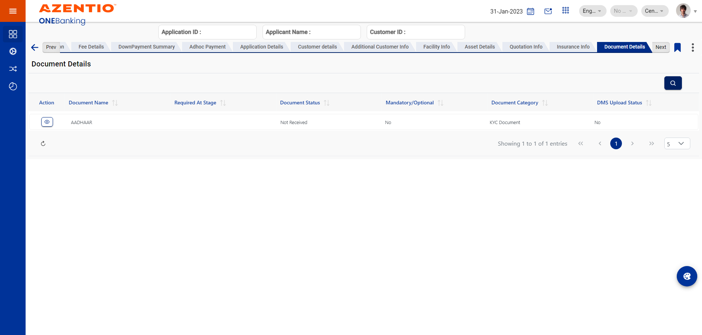Then User_626 logout from the ijaraApplicationstepdefinitions.HooksClass.addScreenshot(io.cucumber.java.Scenario)screenshot
Then User_626 clicking on back button system should navigate to the previous screenstepdefinitions.HooksClass.addScreenshot(io.cucumber.java.Scenario)screenshot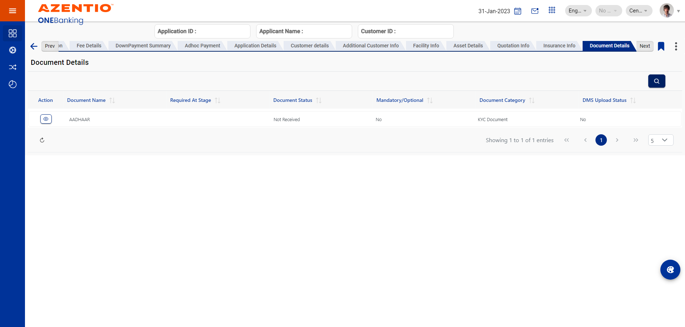Then User_626 logout from the ijaraApplicationstepdefinitions.HooksClass.addScreenshot(io.cucumber.java.Scenario)screenshot
Started
Sep 26, 2023 05:57:52 PM
Ended
Sep 26, 2023 05:58:28 PM
Features Passed
1
Features Failed
0
Features
Scenarios
Steps
Timeline
Tags
| Name | Passed | Failed | Skipped | Others | Passed % |
|---|---|---|---|---|---|
| @AT_DOC_01 | 1 | 0 | 0 | 0 | 100% |
System/Environment
| Name | Value |
|---|---|
| version | 10 |
| os | windows |
-
@AT_DOC_01
1 tests
@AT_DOC_01
1 passedStatus Timestamp TestName Pass 17:57:53 PM To verify Asset Details at App data entry stage is visible at data check stage To Test All Datas in Document Details In Offering Stage.To verify Asset Details at App data entry stage is visible at data check stage